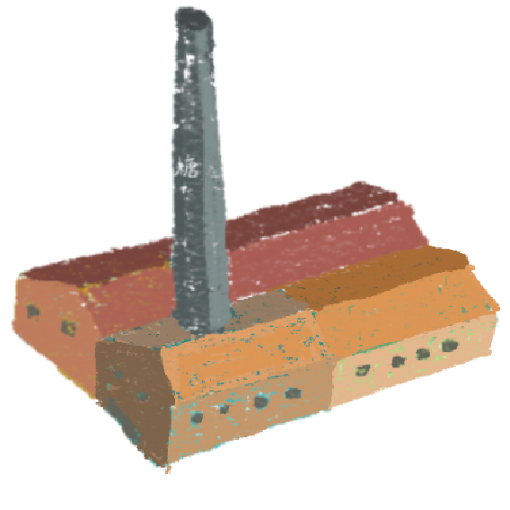
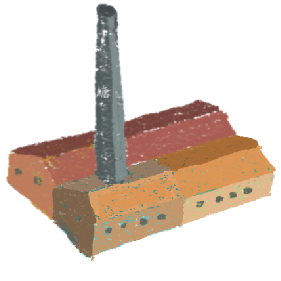

相關文章more
{{ i.title }}
{{ i.describe }}
{{ i.author }}
{{ i.data }}
在臺灣漢人的歷史脈絡及論述中，我們將在 2024年迎來台南 400，此一重要時刻引發了我們對臺南的深刻思考。「在地性」（sense of place）是人們對地方具體生活經驗所產生的認同感，透過這些具體生活經驗，我們與世界建立著聯繫，並確立與生活世界的關係。
「觀看」一直是理解世界的重要方式，而現象學更強調感知地方或世界是建立在「視域」（horizon）之上。因此，我們關心人們如何看待臺南，在歷史脈絡中，過去的臺南又是如何被感知和看見的。哪些特質與痕跡構成了臺南的表述和記憶？它們又如何形成臺南的基本元素和意義？
為深入理解臺南的多樣性，「府看．府城」系列活動以「百年民生」及「人文地景」兩大主題下的十個面向，感知臺南的生動表述和在地記憶，俯瞰百年臺南。透過專題講座、音樂會以及走讀踏查，深入了解這片土地的歷史和文化脈絡，體會臺南獨特的特質和意義。
{{ i.title }}
{{ i.describe }}
{{ i.author }}
{{ i.data }}
「府看・府城」系列 Podcast
在迎接臺南四百之際，「府看・府城」系列 Podcast帶您發掘百年的食衣住行育樂，與各行各業的在地嚮導走入歷史街區，感受府城的百年文化魅力。
本集節目中和我們一起府看府城的，是臺南在地創業家楊子興。子興不只是錦源興百年布莊的第四代負責人，更身兼設計師、策展人、文史工作者和 podcaster。我們特別邀請子興從他的 Podcast 節目小南生 轉移陣地來到 成大人聲 ，和我們聊聊百年布莊的歷史，聽小老闆談老字號如何走上新路，以及他對於文化藝術產業的想法與願景。